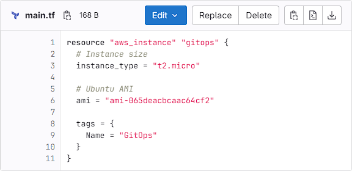
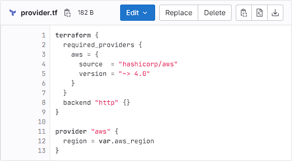
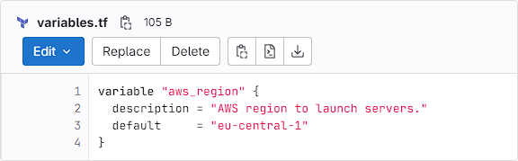

Terraform & GitLab CI
Gábor AUTH (gabor.auth@iotguru.cloud)
Agenda
1. Terraform
2. GitLab CI
3. Integrate
4. Summary, Q&A
1. Terraform
"Terraform is an infrastructure as code tool that enables you to safely and predictably provision and manage infrastructure in any cloud."
1. Terraform
- Infrastructure as code.
- Multi-cloud provisioning.
- Manage Kubernetes.
- Manage network infrastructure.
- Manage virtual images.
- Integrate with existing workflows.
- Enforce policy as code.
1. Terraform
1. Terraform
1. Terraform
2. GitLab CI
"It aims to provide build automation, test automation, pipeline config management, artifact storage, and pipeline security."
2. GitLab CI
A Runner is an application that runs jobs in a pipeline.
It's simple, everything is in the .gitlab-ci.yaml
...or templates, or includes, or... nowadays, it's complicated.
2. GitLab CI
Scripts you want to run.
Configuration files.
Templates you want to include.
Dependencies and caches.
Sequence and parallel runs.
Automate, trigger or run manually.